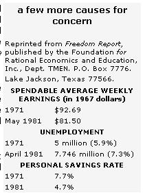

Since this column began (way back in our July/August 1975 issue), it has-with all the force that conviction and constant repetition could muster-put out the same clarion call: The days of inexpensive energy and a happily expanding economy are gone forever.
Of course, simply sounding that early warning of the economic and social uncertainties that are today beginning (but, I'm afraid, only beginning) to affect all of our lives has some value, but we've tried to go beyond merely pointing out problems . . . by advising you to get out of the creditcard/worthless-paper-money economy and work toward the point where your family can satisfy most of its needs without having to depend upon food raised by soil-killing agribusiness "farms" or energy produced at the expense of a clean environment.
Well, for a long time our nation's leaders-and most of the media-pretty much discounted such warnings. However, it seems that the situation has finally gotten so far out of hand that some of the powers-that-be-both in government and in the press-are being forced to abandon their former policy of "let's ignore it and maybe it'll go away". Unfortunately, the very attention being given to our economic predicaments-in the President's speeches as well as the pages of the Wall Street Journal-appears to be causing many folks, out of fear, to be more willing than ever to follow unquestioningly whatever course the government proposes.
Now there certainly are problems in our immediate future severe enough to frighten anyone. And fear can sometimes help people break out of the seductive traps of lethargy and indifference and prepare themselves to face up to whatever they fear. However, when great numbers of men and women are afraid and neither understand exactly what's frightening them nor are given any concrete advice about just how they can work to eliminate or lessen the reason for their fears, a very dangerous situation can develop.
And that's just what seems to be happening in the U.S. today. Folks are afraid. They see the value of their earnings dropping far more rapidly than their wages can rise (a family that earned $9,867 in 1970, according to a recent study, would have had to bring in $24,035 in 1981 just to have the same purchasing power that they had a decade earlier!)... they recognize (particularly people living in most of the major crop-producing areas of North America) that the last two years' dry weather has drastically lowered the water table in many regions . .. they know that decent jobs are getting more and more difficult to find (and those who are out of work, ironi cally enough, see that many of the products being made by people who are working seem to reflect neither pride nor concern for quality) . . . they're faced with the fact that it's somehow harder than it used to be to hold a family together and that-in the country now as well as in the cities-our loss of such social grounding is helping to produce more and more individuals who will gladly steal whatever they want, and even feel a whining sort of selfjustification in doing so!
So people are afraid-and, worse yet, they're convinced that they unknowingly helped bring about much of what they fear-and it has suddenly become all too easy to persuade many of them to accept an answer, any answer, that promises to ease the fear and (perhaps more important still) take away the burden of the responsibility that they have somehow, with no malice, mishandled. And that is perhaps the greatest danger facing the world today!
Of course, the problems that can develop as a result of an uncritical acceptance-by masses of people-of one set of answers can vary widely in seriousness. A blind willingness to follow-on the part of the citizens of inflation-ravaged Germany-gave rise to the Nazi party. That sort of danger, at least, does not confront us today. We have a President who is, by all indications, a decent-and, as last spring's assassination attempt showed, a courageous-man.
However, decency and courage don't magically endow one with the ability to lead a nation . . . particularly a land that's in as confusing and tangled a mess as we're in. Reagan is correct to call for a reduction in federal spending and a balanced budget (although that particular fantasy seems to move further and further into the future each time it's discussed). But those goals cannot be accomplished-nor can our fears or sense of guilt be relieved-by a program that asks the common folk of this country to bite the bullet, suck in their guts, and do without ... while, to give just one example, it throws unprecedented support behind a nuclear energy policy that (as is becoming increasingly clear) could be far more dangerous than even its severest critics have imagined.
No matter how desperate our situation may be (and bad as it certainly is, we're still at a point where self-healing makes a lot more sense than radical surgery), it's flat impossible to justify the government's push toward atomic energy (and away from almost every form of clean, renewable power that offers itself to us). To follow that course of action is to enter into a terrible crap game ... one in which we're risking the very quality of the lives of men and women of untold generations on the chance that what appears to be a costly, dirty, and generally ineffective source can somehow provide enough inexpensive energy to allow our industry a few more years of false "good times" before it has to face the future.
But just what can you do about all this? Well, you can certainly write the blockheads in our nation's capital about your views and, of course, throw your support-the next time you're given the opportunity-toward someone who believes that we do have to clean up our national act, that we do have to hunker down and work a little harder and manage with a little less, and that we do have to find the bravery and discipline necessary to bring this country back to greatness . . . but that we must do so without accelerating the rape of the planet which is already the most awful of the horrors surrounding us.
Probably even more important, though, is to take steps to protect yourself and your family regardless of the blunders that governmental bureaucrats will in all likelihood continue to commit. The closer you get to the point where you can honestly say, "We could go it alone" (at the same time being willing to aid those around you, to reestablish a sense of community among the people living closest to you), the safer and happier you'll certainly be.
And as more and more people establish that sort of independence, on whatever level and to whatever extent they can, a great many of the dangers that this column has been warning about-and that now seem to fill almost every newspaper-will begin to look a darn sight less threatening!
|
 |
|
|